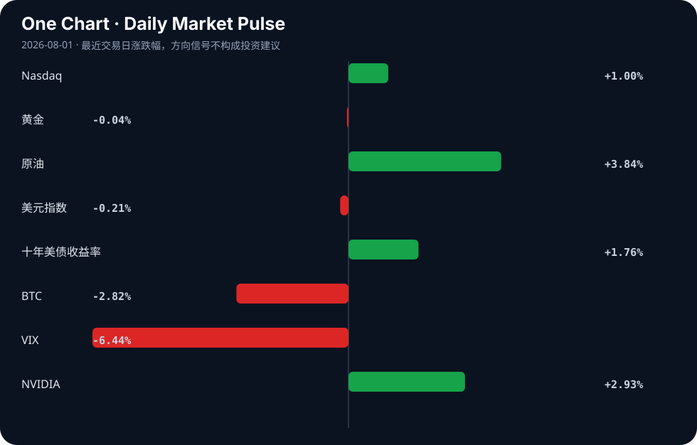

Daily Intelligence
2026-08-01｜Saturday
Today’s Thesis｜今日一句话
AI产业正从叙事驱动转向盈利与合规的双重约束，而全球宏观工业周期下行迫使政策干预加码，两者交汇将重塑资本的风险偏好与估值锚。
① Executive Summary｜30 秒
- AI：Anthropic有望迎来首季盈利[A14]与AI对冲基金崩溃[A16]并存，AI估值逻辑从“烧钱换增长”转向现金流验证。
- 商业：一人公司借AI规模破百万[A21]与Snapchat拒推AI生成内容[A19]同现，AI的商业边界与价值分配被重新划定。
- 宏观：7月PMI放缓呼唤增量政策[B13]，日本央行干预捍卫日元[B19]，工业现实走弱与金融防御交织。
② AI Daily
盈利分水岭：Anthropic的曙光与对冲基金的暗礁
What Happened Anthropic销售额暴增，有望迎来首个季度盈利[A14]；与此同时，一家被誉为神童创立的AI对冲基金发生内爆与崩溃[A16]。
Why It Matters 市场正在对AI进行残酷的现金流测试。能够产生正向经营杠杆的模型提供商将获得持续性融资，而缺乏风控护城河、仅凭AI叙事杠杆的金融应用正在被出清。
Second-order Effect 资本退潮 → 现金流验证成为唯一估值锚 → 泡沫叙事破裂[A20] → 纯应用层AI公司面临并购或倒闭。
硬件与算法的底层突围
What Happened AMD举办Advancing AI 2026，试图打破CUDA护城河[A13]；开源社区出现纯整数AI完成XOR且达99.7%准确率的从零实现[A2]。
Why It Matters 算力成本与软件生态锁定是当前AI最大的物理与经济约束。硬件替代（AMD）与极简算法（整数计算）正在从两端挤压英伟达与浮点运算的垄断溢价。
Second-order Effect 算力成本下降 → 边缘设备AI可用性提升 → Linux等开源系统借AI势能争夺桌面端[A1]。
合规高墙与地缘切割
What Happened 法官驳回X.AI对明尼苏达州AI裸体化禁令的阻止请求[A5]；美众院要求DoorDash说明使用中国AI模型的风险[A24]；耶鲁AI作弊争议升级为13项联邦诉讼[A7]。
Why It Matters AI的法律与地缘边界正在迅速硬化。从内容伦理、数据安全到学术诚信，缺乏规则的红利期结束，合规成本正式进入损益表。
Second-order Effect 合规成本激增 → 模型本地化与碎片化 → 全球AI供应链加速脱钩。
③ Business Daily
科技：平台划定人机边界
Snapchat宣布不再聚焦AI生成内容[A21]，转而奖励“真实创造力”；而汤森路透自建跻身世界最佳行列的AI模型[A15]。平台正在向AI生成内容关上流量大门，而拥有专有数据的巨头选择将AI内化为核心资产，拒绝依赖通用大模型，中间层SaaS面临挤压。
医疗/消费：监管刺破增长泡沫
史上最严监管落地，医美行业高增长泡沫碎裂[B8]。依赖信息不对称和营销驱动的消费医疗，在监管透明度要求下，其粗放增长模式失效，行业进入合规成本驱动的集中度提升期。
制造：新旧动能分化
工业产出出现6年来首次萎缩[B2]，7月PMI阶段性回落[B13]。但部分行业生产经营活动预期升至60%以上高位景气区间[B22]，亚太地区工业竞争力正快速重构[B6]。传统制造去产能与新动能（高端制造/自动化）的韧性并存，政策发力点将精准倾斜于后者[B20]。
④ Macro Observation｜机制分析
世界正在发生什么？ 全球工业周期步入实质性收缩（6年首萎[B2]，PMI放缓[B13]），同时地缘摩擦加剧（西亚战争风险，中美AI模型脱钩[A24]）。然而，全球贸易与风险资产尚未崩盘，形成了一个反常的“脱节”。
为什么发生？ AI繁荣正在充当宏观风险的减震器。AI投资对冲了传统经济的衰退预期，技术叙事吸收了原本应流向实体衰退的悲观资本[B17]。此外，日本央行在160关口干预日元[B19]，通过汇率防御暂缓了全球流动性危机的传导。
资本如何流动？ 资本正从广泛的工业与新兴市场风险暴露中撤出，流入AI算力基础设施（硬约束）、高股息防御资产及政策确定性板块。日元干预与美债收益率攀升[B16]正在抽离套利流动性，BTC与黄金的分化表明资本在“通胀对冲”与“流动性退潮”间摇摆。
接下来关注什么？ 关注中国增量政策的规模与传导效率[B13][B20]，以及日本央行干预的可持续性[B19]。若政策不及预期或日元防线失守，AI叙事对宏观衰退的对冲将失效，反身性抛售将启动。
⑤ Signal Dashboard
| 指标 | 最新值 | 今日 | 信号 |
|---|---|---|---|
| Nasdaq | 25,373.85 | ↑ +1.00% | 风险偏好改善 |
| 黄金 | 4,098.60 | → -0.04% | 中性 |
| 原油 | 86.80 | ↑ +3.84% | 通胀压力上升 |
| 美元指数 | 99.80 | ↓ -0.21% | 外部压力缓解 |
| 十年美债收益率 | 4.75 | ↑ +1.76% | 成长估值承压 |
| BTC | 62,896.95 | ↓ -2.82% | 风险偏好降温 |
| VIX | 15.99 | ↓ -6.44% | 风险偏好改善 |
| NVIDIA | 200.75 | ↑ +2.93% | 风险偏好改善 |
⑥ Deep Insight
一人公司的繁荣与企业AI泡沫的破裂
当前市场对AI商业化的关注集中在巨头能否跨越盈利门槛，如Anthropic销售额暴增有望迎来首个季度盈利[A14]。然而，真正具有破坏性的结构性变化发生在微观层面：AI正帮助一人公司规模达到百万美元以上[A21]。这看似是AI赋能的胜利，实则是传统企业AI估值逻辑的掘墓人。当个体借助开源或廉价API就能完成过去需要一个团队和庞大SaaS基础设施才能实现的工作时，企业为“定制AI解决方案”支付溢价的意愿将急剧萎缩。
与此同时，合规与法律的高墙正在迅速竖起。明尼苏达州法官驳回X.AI的请求，维持AI裸体化禁令[A5]；耶鲁AI作弊争议演变为13项联邦诉讼[A7]；美国众议院要求DoorDash说明使用中国AI模型的风险[A24]。这些事件并非孤立，而是构成了一个严密的约束网络：地缘政治切割模型供应链，国内法划定数据与生成边界，机构规则重塑人机协作信任。
在此背景下，苹果“坐视一切燃烧”的旁观策略[A20]显得尤为理性。巨头在基础设施上的巨额资本支出面临回报率悬崖，而合规成本将迫使AI开发向少数能承担法律风险的巨型企业集中，或者向不依赖生成内容的边缘侧应用转移。Snapchat决定不再聚焦AI生成内容[A19]，正是平台对合规与信任风险的本能规避。
一人公司的繁荣[A21]与汤森路透自建顶级模型[A15]并不矛盾，它们分别代表了AI价值链的两极：极度的轻量化与极度的重资产。中间地带——那些依赖微调模型和行业通用解决方案的中间商——将被彻底挤压。AI泡沫的破裂不是技术的失败，而是商业模式的均值回归。
反方观点：一人公司只是长尾市场的边缘现象，无法替代大型企业对高可用、高安全、定制化AI基础设施的刚性需求；合规摩擦是阶段性的，随着监管框架成熟，开发成本将再次下降。
证伪条件：若未来6-12个月内，大型企业AI资本支出持续加速且中间层SaaS公司营收未出现明显下滑；或AI相关诉讼与监管处罚被高比例驳回、和解，则上述“中间地带挤压”与“合规成本永久化”的推断不成立。
⑦ Tomorrow Watch
1. 中国央行及部委针对7月PMI放缓出台的增量政策细则及市场反应[B13]。
2. 日本央行在160关口干预日元后的汇率波动及后续货币政策声明[B19]。
3. Anthropic季度财报的正式发布，验证其首个季度盈利的成色及收入构成[A14]。
4. AMD “Advancing AI 2026”大会上软件生态（ROCm）对CUDA替代路径的具体进展[A13]。
5. 美国众议院对DoorDash使用中国AI模型风险的听证会或调查报告推进[A24]。
⑧ One Chart

原油与美债收益率同步上行，而美元指数微跌，这种组合通常暗示滞胀预期而非健康增长。NVIDIA上涨与BTC下跌的分化，说明当前流动性在向AI算力核心资产集中，而非广泛扩散至高风险投机资产，相关性并非因果，但资金分流暗示宏观约束正在收紧。⑨ Quote of the Day
“Prediction is very difficult, especially if it’s about the future.”
— Attributed to Niels Bohr
中文理解：预测未来很难，所以更重要的是识别关键变量和更新机制。
Why it matters today：这句话不是装饰，而是今天观察 AI、商业和宏观变化时的一个思考框架：先看机制，再看价格；先看约束，再看叙事。
⑩ Action Items｜今天值得思考什么
1. 验证 Anthropic的盈利路径是否依赖不可持续的云厂商补贴或短期合同集中[A14]。
2. 追踪 一人公司规模扩张对传统B2B SaaS定价权与客户留存率的实际侵蚀效应[A21]。
3. 比较 明尼苏达州AI禁令[A5]与DoorDash中国AI模型质询[A24]的合规成本，评估跨国企业的地缘合规套利空间。
4. 关注 日本央行160防线[B19]与中国PMI放缓[B13]的交汇点，警惕套利交易逆转引发的流动性冲击。
5. 思考 苹果在AI泡沫破裂时的旁观策略[A20]，是否是当前硬件巨头面对算力过剩风险的最优资本配置方式。
信息边界
本报告事实来源限于提供的 Hacker News、Google News 等聚合源，可能存在二次转述偏差，重要判断请回溯原文验证。宏观与商业数据时效截至 2026年7月31日，市场数据（Signal Dashboard）反映最近一个交易日的收盘或近似值，不代表实时报价。未经验证的推断已在文中明确标注。
Sources
AI
- A1：Ask HN: Which Linux distribution is capitalizing on AI momentum? — Hacker News · AI
- A2：Show HN: Integer-only AI complete XOR with 99.7% accuracy all from scratch — Hacker News · AI
- A5：Judge denies X.AI's attempt to stop Minnesota's AI nudification ban — Hacker News · AI
- A7：How A Yale AI-cheating dispute became a 13-count federal lawsuit — Hacker News · AI
- A13：Can AMD Break the CUDA Moat? AMD Advancing AI 2026 — Hacker News · AI
- A14：打破AI烧钱魔咒！Anthropic销售额暴增 有望迎来首个季度盈利 - cls.cn — Google News · AI 中文
- A15：Thomson Reuters built its own AI model that now ranks among the best — Hacker News · AI
- A16：Inside the Meltdown of a Wunderkind’s A.I. Hedge Fund - The New York Times — Google News · AI
- A19：Snapchat to no longer spotlight AI generated content — Hacker News · AI
- A20：Apple Will 'Watch Everything Burn' When AI Bubble Bursts — Hacker News · AI
- A21：How AI Is Helping One-Person Companies Scale to $1M–and Beyond — Hacker News · AI
- A24：美众院两委员会致函外卖平台DoorDash，要求说明使用中国AI模型风险 - voachinese.com — Google News · AI 中文
Business & Macro
- B2：Industrial output shrinks for first time in 6 years - The Daily Star — Google News · Global Economy
- B6：Asia-Pacific's industrial competitiveness is changing fast - The World Economic Forum — Google News · Global Economy
- B8：史上最严监管，医美行业的高增长泡沫，碎了 - 36 Kr — Google News · 行业
- B13：7月PMI放缓，出台增量政策 - 新浪财经 — Google News · 行业
- B16：Japanese Yen: BoJ Patience Keeps USD/JPY in a Wide Trading Range – TD Securities - CryptoRank — Google News · Markets Policy
- B17：AI boom shields global trade from West Asia war - financialexpress.com — Google News · Global Economy
- B19：BOJ intervenes to defend yen near 160, holds rates steady - TradingView — Google News · Markets Policy
- B20：政策发力提效 推动经济持续向新向优向好发展 - Sohu — Google News · 行业
- B22：超60%！这两个行业生产经营活动预期为何升至高位景气区间 - Sohu — Google News · 行业